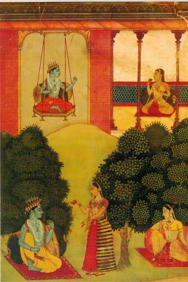

Krishna on Swing
Details
SUBJECT MATTER :- This is one of the miniature painting whose artist is Nuruddin. The painting is based on the Rasikapriya peortry of Keshavdas. That poetry is one of the most widely illustrated work of Hindi medieval poetry.In this painting, one day Krishna takes gopi on a swing with him who is other than Radha. This offended Radha whose love for Krishna woulld not tolerate any other person in between their love. So Radha feels hurt and betrayed.
DESCRIPTION:- This painting is devided into two sections, upper and lower. In upper section we can see Krishna sitting on a swing while gopi sitting on the other . Krishna is enjoying himself with the gopi. When Radha gets to know about this, she feels sad and betrayed. Krinshna feels guilty for his mistankes and follows her to the countryside. In the lower part of the painting we can see Krishna sitting inside one bower while Radha sitting in the other, which is opposite to Krishna. The eyes and faces of both the characters shows grief and pain in love. A gopi is standing between both of them. From her actions and gestures it seems like she is trying to resolve the misunderstanding between Radha and Krishna. The gopi seems to assert that being a male and mightier, he is expected to have a broader, wider and more liberal mind and a greater responsibility towards Radha.
The painting is close to indiginous Rajput conscience. This painting is displaying folk-art elements while also still showing fine draughtmanship, technical execution and use of softer shades and tones of colors with fine, sharp lines. Krishna is shown well dressed and ornamented. Also having a crown on his head. In the lower part where Krishna and Radha are seated in the bowers, behind them is round pillow. White color in this painting was for ornamental decoration.
HUMAN VALUES:
1.Love and divotion of the divine couple for each other.
2.Goodwill among friends and familywho can help as mediators in some misunderstandings and issues to resolve the matter.
3.Eagerness to have a dialogue to resolve misunderstanding and conflict.